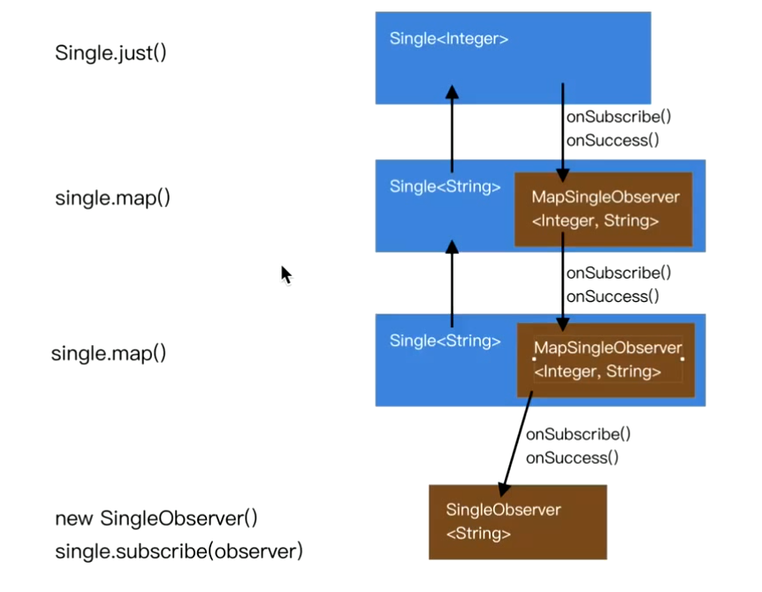

Android面试题整理
Android Handler消息机制
- Handler 的背后有 Looper、MessageQueue 支撑，Looper 负责消息分发，MessageQueue 负责消息管理；
- 在创建 Handler 之前一定需要先创建 Looper；
- Looper 有退出的功能，但是主线程的 Looper 不允许退出；
- 异步线程的 Looper 需要自己调用 Looper.myLooper().quit(); 退出；
- Runnable 被封装进了 Message，可以说是一个特殊的 Message；
- Handler.handleMessage() 所在的线程是 Looper.loop() 方法被调用的线程，也可以说成 Looper 所在的线程，并不是创建 Handler 的线程；
- 使用内部类的方式使用 Handler 可能会导致内存泄露，即便在 Activity.onDestroy 里移除延时消息，必须要写成静态内部类；
- Android中为什么主线程不会因为Looper.loop()里的死循环卡死？ 阻塞线程，处于休眠状态，但不耗用CPU资源
- Android卡顿优化--卡顿检测 卡顿检测工具里面有用到Looper
主线程的死循环一直运行是不是特别消耗CPU资源呢？ 其实不然，这里就涉及到Linux pipe/epoll机制，简单说就是在主线程的MessageQueue没有消息时，便阻塞在loop的queue.next()中的nativePollOnce()方法里，详情见Android消息机制1-Handler(Java层)，此时主线程会释放CPU资源进入休眠状态，直到下个消息到达或者有事务发生，通过往pipe管道写端写入数据来唤醒主线程工作。这里采用的epoll机制，是一种IO多路复用机制，可以同时监控多个描述符，当某个描述符就绪(读或写就绪)，则立刻通知相应程序进行读或写操作，本质同步I/O，即读写是阻塞的。 所以说，主线程大多数时候都是处于休眠状态，并不会消耗大量CPU资源。
事件分发
深入理解事件分发 ViewGroup.mFirstTouchTarget的设计
mFirstTouchTarget的作用是什么，记录后续事件派发的目标
//本源码来自 api 28,不同版本略有不同。
public boolean dispatchTouchEvent(MotionEvent ev) {
// 第一步：处理拦截
boolean intercepted;
// 注意这个条件，后者代表着有子view消费事件。后面会讲
if (actionMasked == MotionEvent.ACTION_DOWN || mFirstTouchTarget != null) {
// 子view调用了parent.requestDisallowInterceptTouchEvent干预父布局的拦截，不让它爸拦截它
final boolean disallowIntercept = (mGroupFlags & FLAG_DISALLOW_INTERCEPT) != 0;
if (!disallowIntercept) {
intercepted = onInterceptTouchEvent(ev);
ev.setAction(action);
} else {
intercepted = false;
}
} else {
//既不是DOWN事件，mFirstTouchTarget还是null，这种情况挺常见：如果ViewGroup的所有的子View都不消费 //事件，那么当ACTION_MOVE等非DOWN事件到来时，都被拦截了。
intercepted = true;
}
// 第二步，分发ACTION_DOWN
boolean handled = false;
boolean alreadyDispatchedToNewTouchTarget = false; //注意这个变量,会用到
// 不拦截才会分发它，如果拦截了，就不分发ACTION_DOWN了
if (!intercepted) {
//处理DOWN事件，捕获第一个被触摸的mFirstTouchTarget，mFirstTouchTarget很重要，
保存了消费了ACTION_DOWN事件的子view
if (ev.getAction == MotionEvent.ACTION_DOWN) {
//遍历所有子view(看源码知子View是按照Z轴排好序的)
for (int i = childrenCount - 1; i >= 0; i--) {
//子view如果：1.不包含事件坐标 2. 在动画 则跳过
if (!isTransformedTouchPointInView() || !canViewReceivePointerEvents()) {
continue;
}
//将事件传递给子view的坐标空间，并且判断该子view是否消费这个触摸事件（分发Down事件）
if (dispatchTransformedTouchEvent()) {
//将该view加入头节点，并且赋值给mFirstTouchTarget
newTouchTarget = addTouchTarget(child, idBitsToAssign);
alreadyDispatchedToNewTouchTarget = true;
break;
}
}
}
}
//第三步：分发非DOWN事件
//如果没有子view捕获ACTION_DOWN，则交给本ViewGroup处理这个事件。我们看到，这里并没有判断是否拦截，
//为什么呢？因为如果拦截的话，上面的代码不会执行，就会导致mFirstTouchTarget== null，于是就走下面第一 //个条件里的逻辑了
if (mFirstTouchTarget == null) {
super.dispatchTouchEvent(ev); //调用View的dispatchTouchEvent，也就是自己处理
} else {
//遍历touchTargets链表，依次分发事件
TouchTarget target = mFirstTouchTarget;
while (target != null) {
if (alreadyDispatchedToNewTouchTarget) {
handled = true
} else {
if (dispatchTransformedTouchEvent()) {
handled = true;
}
target = target.next;
}
}
}
//处理ACTION_UP和CANCEL，手指抬起来以后相关变量重置
if (ev.getAction == MotionEvent.ACTION_UP) {
reset();
}
}
return handled;
}
自定义控件
Android和java基本面试题
- LRU算法及编码实现LRU策略缓存
- Java：强引用，软引用，弱引用和虚引用
强引用：必不可少的物品，不会被垃圾回收器回收。当内存空间不足，Java虚拟机宁愿抛出OutOfMemoryError错误，使程序异常终止，也不回收这种对象。 软引用:用来描述一些有用但并不是必需的对象，在Java中用java.lang.ref.SoftReference类来表示。对于软引用关联着的对象，只有在内存不足的时候JVM才会回收该对象。 弱引用:用来描述非必需对象的，当JVM进行垃圾回收时，无论内存是否充足，都会回收被弱引用关联的对象。在java中，用java.lang.ref.WeakReference类来表示。
- 断点续传的实现
- Java中HashMap的实现原理
- ThreadLoacal用法以及原理
ThreadLocal的实现原理是，在每个线程中维护一个Map，键是ThreadLocal类型，值是Object类型。当想获取ThreadLocal的值时，就从当前线程中拿出Map，然后在把ThreadLocal本身作为键从Map中拿出值返回。
-
Java线程池工作原理浅析 关键类：ThreadPoolExecutor
- Binder 跨进程通信机制 写给 Android 应用工程师的 Binder 原理剖析 Android进阶——Android跨进程通讯机制之Binder、IBinder、Parcel、AIDL
虚拟机
第三方库源码分析
OKHTTP
面试官：听说你熟悉OkHttp原理？ OKHttpClient,RealCall,Dispatcher,AsynCall 1. 请求流程 2. 分发器(Dispatcher) 3. 拦截器 OkHttp之拦截器 Android okhttp 刷新token 4. 缓存 5. 连接池 okhttp连接池复用机制 6. okio 官网 深入理解okio的优化思想 sources和sinks
Retrofit
retrofit源码解析--retrofit创建方法(builder、baseurl、converter...)
Rxjava
- 订阅流程

从下游一层一层往上游订阅，订阅的时候会调用subscribeActual方法，而在这个方法里订阅上游，每订阅一层会创建一个Observer
，而Observer中持有下游的Observer，当订阅到最顶层的时候，事件创建者开始向下游分发事件比如onNext，onSuccess,往下游传递事件少不了每一层自己创建的Observer。
测试代码如下：
首先看一下代码这里面有几个对象，我们分解一下会更容易理解些
fun main() { val mySingleObserver = object : SingleObserver<String> { override fun onSuccess(t: String?) { println("------$t") } override fun onSubscribe(d: Disposable?) { println("我被订阅了") } override fun onError(e: Throwable?) { e?.printStackTrace() } } Single.just(1) .map(object : io.reactivex.rxjava3.functions.Function<Int, String> { override fun apply(t: Int): String { return "---$t" } }) .subscribe(mySingleObserver) } - Single.just(1)实际上是创建了SingleJust对象，SingleJust继承于Single。
- SingleJust.map()创建了SingleMap对象，SingleMap同样是继承于Single
- 上面代码最终可以这么看
- subscribe方法是SingleMap对象的方法，也是Single类中的方法
public final void subscribe(@NonNull SingleObserver<? super T> observer) {
Objects.requireNonNull(observer, "observer is null");
observer = RxJavaPlugins.onSubscribe(this, observer);
Objects.requireNonNull(observer, "The RxJavaPlugins.onSubscribe hook returned a null SingleObserver. Please check the handler provided to RxJavaPlugins.setOnSingleSubscribe for invalid null returns. Further reading: https://github.com/ReactiveX/RxJava/wiki/Plugins");
try {
// 6. 接着上面步骤来，它其实调用的SingleMap类的subscribeActual方法
subscribeActual(observer);
} catch (NullPointerException ex) {
throw ex;
} catch (Throwable ex) {
Exceptions.throwIfFatal(ex);
NullPointerException npe = new NullPointerException("subscribeActual failed");
npe.initCause(ex);
throw npe;
}
}
public final class SingleMap<T, R> extends Single<R> {
final SingleSource<? extends T> source;
final Function<? super T, ? extends R> mapper;
public SingleMap(SingleSource<? extends T> source, Function<? super T, ? extends R> mapper) {
this.source = source;
this.mapper = mapper;
}
// 上面订阅的时候，实际上调用的就是这个方法
@Override
protected void subscribeActual(final SingleObserver<? super R> t) {
// 这个source是SingleJust对象，也就是SingleMap的上游
source.subscribe(new MapSingleObserver<T, R>(t, mapper));
}
static final class MapSingleObserver<T, R> implements SingleObserver<T> {
final SingleObserver<? super R> t;
final Function<? super T, ? extends R> mapper;
MapSingleObserver(SingleObserver<? super R> t, Function<? super T, ? extends R> mapper) {
this.t = t;
this.mapper = mapper;
}
@Override
public void onSubscribe(Disposable d) {
t.onSubscribe(d);
}
@Override
public void onSuccess(T value) {
R v;
try {
v = Objects.requireNonNull(mapper.apply(value), "The mapper function returned a null value.");
} catch (Throwable e) {
Exceptions.throwIfFatal(e);
onError(e);
return;
}
t.onSuccess(v);
}
@Override
public void onError(Throwable e) {
t.onError(e);
}
}
}
Glide
缓存
网络
Android架构
Android 组件化与插件化 Android彻底组件化方案实践
测试
优化
布局优化
- 重绘制
- include、merge和ViewStub
- 复杂界面可选择ConstraintLayout，可有效减少层级
- View的绘制频率保证60fps是最佳的， onDraw方法中不要做耗时的任务，也不做过多的循环操作，onDraw()中不要创建新的局部对象。
内存优化
- 内存泄露：单例/静态变量造成的内存泄漏，匿名内部类/非静态内部类